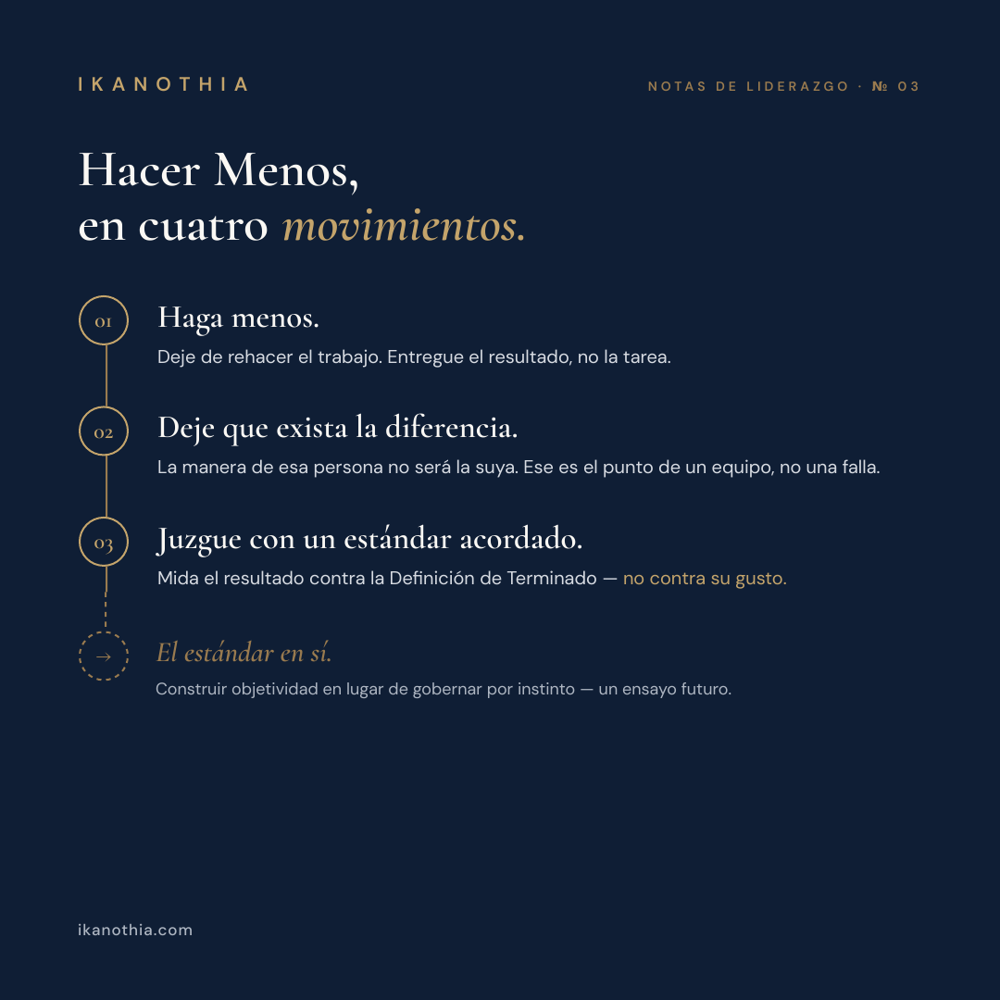

Lo Más Difícil de Liderar Es Hacer Menos
Por Vivianne Kieffer
Delegar no es repartir tareas: es transferir resultados y juzgarlos contra un estándar acordado, no contra su gusto.
Hacer Menos, en cuatro movimientos.
01
Haga menos.
Deje de rehacer el trabajo. Entregue el resultado, no la tarea.
02
Deje que exista la diferencia.
La manera de esa persona no será la suya. Ese es el punto de un equipo, no una falla.
03
Juzgue con un estándar acordado.
Mida el resultado contra la Definición de Terminado — no contra su gusto.
Próximamente
El estándar en sí.
Construir objetividad en lugar de gobernar por instinto — un ensayo futuro.
